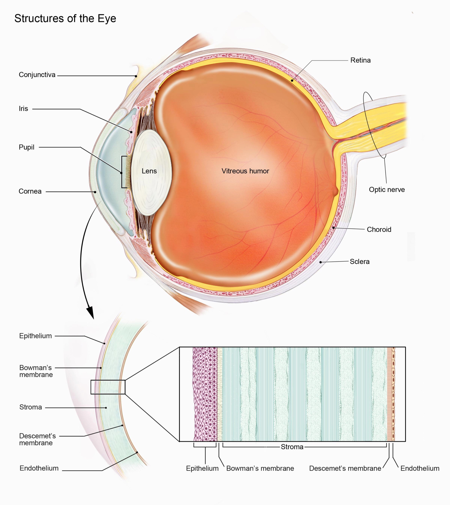
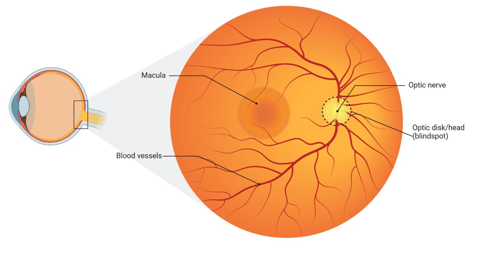

1 眼睛作为窗口：揭示视网膜成像的力量
1.1 引言：眼见为实的背后
人类的眼睛，这个复杂的视觉感知器官，常常因其感知周围世界的能力而受到赞美。然而，这个非凡的器官拥有远超视觉功能的潜力。它是一个复杂的、活生生的组织——人体的一个微观世界，具有独特的血管和神经结构，为我们提供了一个直接、非侵入性的窗口来了解一个人的整体健康状况。当我们深入研究现代成像技术，特别是眼底摄影的能力时，我们开始揭示医学中的一个新范式，眼睛作为一种强大的诊断工具，远远超出了传统眼科学的范畴。
几个世纪以来，视网膜的检查仅限于使用传统检眼镜所能观察到的内容。虽然这仍然是一种有价值的技术，但检眼镜检查需要专业培训、熟练的眼力，而且无法以易于存储或共享的方式捕捉信息1。然而，现代技术带来了非散瞳眼底相机，当与人工智能结合时，释放了视网膜成像的隐藏潜力。借助这些进步，视网膜血管和眼睛其他结构中可见的微妙变化现在可以被量化并与广泛的全身性疾病相关联，从而改变了我们对健康评估的方式。这种通过单一、相对简单、非侵入性程序看到的身体新视野，有潜力彻底改变我们对诊断医学、预防性护理和更个性化健康管理的方法。
在本书中，我们将踏上探索这一激动人心前沿领域的旅程。我们将研究支持使用视网膜眼底成像评估一般健康状况的新兴科学证据，这些发现如何转化为临床或健康环境，最后我们将探讨这一新兴领域的未来方向，以及Opticare如何引领这一变革。到本书结束时，你将理解诗人威廉·布莱克的话：“眼睛所见远超心所知。”
1.2 视网膜：身体的独特微观世界
位于眼球后部的视网膜不仅仅是一种感光组织；它是大脑的非凡延伸。它在胚胎发育过程中的形成与中枢神经系统密切相关。视网膜和大脑都在胚胎发生过程中来源于神经管，这导致了共享的生物学途径和共同的细胞类型。这种密切联系意味着视网膜不仅仅是视觉信息的被动接收者，而是中枢神经系统的活跃延伸，因此可以反映身体的整体神经健康状况。
当医疗专业人员检查眼睛时，他们观察的是”眼底”——位于晶状体对面的眼睛内部表面，包括视网膜、视盘、黄斑和后极。“眼底”一词来源于拉丁语，意为”底部”或”基部”，因为它代表了在检查过程中可以可视化的眼睛内部后部分。当我们在本书中提到眼底摄影或成像时，我们讨论的是对眼睛内部后表面的专业摄影，其中包含反映眼部和全身健康的这些关键结构。

从结构上看，视网膜是一个多层膜，包含感光细胞、中间神经元、神经节细胞和胶质细胞。这些神经元负责将光信号转换为电脉冲，然后发送到大脑进行处理。但对于本次讨论而言，也许更重要的是，视网膜拥有精细且高度血管化的微血管网络。视网膜微血管系统由小动脉、毛细血管和小静脉组成，促进了营养物质和氧气的输送，这对视网膜细胞的高代谢活动至关重要，同时也清除代谢废物。视网膜微血管系统可通过眼底摄影等非侵入性方法高度可及。这种血管系统在结构上是独特的。与其他血管相比，视网膜血管清晰可见且可直接观察，不被组织或皮肤遮蔽，使其成为研究微血管功能障碍的完美模型。视网膜小动脉和小静脉对生理变化也非常敏感，鉴于它们是较大循环系统的一部分，也可以反映其他器官的病理过程。

此外，视网膜和脉络膜是高耗氧组织，因此当氧气供应或代谢废物清除受损时，其细胞对细胞损伤的敏感性很高。因此，许多研究人员发现视网膜结构与各种全身性疾病之间存在联系并不令人惊讶。视网膜血液供应与其他神经组织的紧密整合也使其成为研究糖尿病、高血压、心脏病和神经退行性疾病等全身性疾病影响的理想场所。总而言之，视网膜的独特特性——与大脑的直接联系、高度可见的微血管系统和高代谢活动——使其成为评估整体全身健康的强大非侵入性工具。
1.3 常见眼部病理：通过眼底观察
虽然本书主要关注视网膜成像用于评估全身健康的应用，但了解通过眼底摄影容易观察到的常见眼部病理也很重要。这些情况虽然传统上由眼科医生评估，但在审查视网膜图像时了解它们很重要。了解这些眼部疾病可以帮助临床医生理解何时进行转诊，并有助于说明使用视网膜进行健康评估和诊断的重要性。在此，我们将探讨几种最常见的可通过眼底成像检测到的眼部疾病：
糖尿病视网膜病变 (DR)： 糖尿病视网膜病变是糖尿病的微血管并发症，也是全球致盲的主要原因之一。它发生在高血糖水平损害视网膜中的小血管时，导致一系列病理变化。DR的最早迹象包括微动脉瘤（毛细血管的小扩张）、出血（受损血管渗血）和渗出物（渗漏血管中的液体和蛋白质沉积物）。这些变化进展为更严重的疾病形式，如增殖性糖尿病视网膜病变，可能包括新生血管形成。糖尿病视网膜病变的视网膜变化在疾病早期阶段通常很微妙，因此容易被传统方法忽视。
眼底摄影对于糖尿病视网膜病变的早期检测至关重要。早期检测至关重要，因为DR在初始阶段是高度可治疗的。治疗选择始于改善血糖控制和血压管理，但随着病情进展通常需要特定的眼科干预。
对于更高级的病例，治疗包括激光光凝，这是一种相对快速的门诊手术，使用激光密封渗漏血管并防止新的异常血管形成。这种20-30分钟的手术在局部麻醉下进行，患者通常第二天就能恢复正常活动，尽管可能需要多次治疗。
另一种治疗选择是抗VEGF（血管内皮生长因子）疗法。VEGF是一种刺激新血管生长的蛋白质，在糖尿病视网膜病变中，这些血管可能很脆弱且容易渗漏。抗VEGF药物如雷珠单抗（Lucentis）或阿柏西普（Eylea）直接注射到眼内以阻断这种蛋白质，减少异常血管生长和液体渗漏。这些注射在眼科医生办公室进行，局部麻醉下只需几分钟，尽管为达到最佳效果可能需要每4-6周重复一次。
对于更严重的病例，可能需要玻璃体切除手术。这是在医院环境中进行的更具侵入性的手术，将眼睛的玻璃体凝胶去除，以便修复视网膜。玻璃体切除手术的恢复通常需要几周时间，可能需要限制体位和活动。
如果不及时干预，DR可能会发展为严重的视力损害或失明，可能是不可逆的。此外，治疗晚期DR的成本比早期干预要高得多，无论是在经济上还是在患者生活质量方面。
通过眼底摄影可视化的变化通常具有诊断意义，可以启动生活方式改变和其他治疗干预，防止糖尿病视网膜病变和视力丧失的进展。DR的早期识别也可能是更广泛的全身血管变化的指标，并强调了更好地管理糖尿病全身疾病的需要。

来源：维基百科
年龄相关性黄斑变性 (AMD)： 年龄相关性黄斑变性是一种影响黄斑的进行性疾病，黄斑是负责中央视力的视网膜部分。AMD是老年人群视力丧失的主要原因之一。AMD的发病机制很复杂，环境、遗传、代谢和免疫因素都起着重要作用。AMD有两种主要类型：干性和湿性。在干性AMD中，玻璃膜疣（黄色沉积物）形成于视网膜和RPE下方，可能导致黄斑萎缩。在湿性AMD中，异常血管在视网膜下生长，导致渗漏和出血，因此导致视力快速下降。
两种AMD形式的治疗选择差异很大。对于占病例约85-90%的干性AMD，目前没有FDA批准的可以逆转这种情况的治疗方法。然而，大型临床试验表明，特定高剂量营养补充剂（称为AREDS2配方，含有维生素C和E、锌、铜、叶黄素和玉米黄素）可在五年内将进展至晚期的风险降低约25%。生活方式修改，包括戒烟、定期锻炼、维持正常血压和食用富含绿叶蔬菜和鱼类的饮食，也可能有助于减缓进展。
对于湿性AMD，治疗选择更具干预性和时间敏感性。标准护理包括类似于糖尿病视网膜病变使用的抗VEGF注射。这些药物（包括雷珠单抗（Lucentis）、阿柏西普（Eylea）和贝伐单抗（Avastin））最初通常每四到八周直接注射到眼内一次。这些门诊手术仅需几分钟，在局部麻醉下进行。较新的制剂如布洛芦单抗（Beovu）可能允许减少注射频率。及时给药时，这些注射可以稳定90%以上患者的视力，并改善约三分之一病例的视力。
对于不响应抗VEGF治疗的患者，可以考虑光动力疗法。这种两步门诊手术包括静脉内给予对光敏感的药物，该药物在异常血管中浓缩，然后应用冷激光激活药物并密封渗漏血管。
眼底摄影是早期检测AMD的关键工具，使临床医生能够识别玻璃膜疣或黄斑中的其他微妙变化。视网膜下玻璃膜疣（黄色沉积物）的存在和黄斑中的色素变化也可以指示疾病的早期阶段，提供预防行动的机会。眼底照片的AI分析可以实现AMD的早期检测和分类，这可能导致早期干预，如生活方式修改和维生素补充，可能减缓疾病的进展。它还允许快速识别AMD的湿性形式，这种形式更严重，新发湿性AMD患者会紧急转诊给视网膜专家进行干预。鉴于湿性AMD的有效治疗窗口很窄——通常以天而非周计——这种快速识别可以挽救视力。

来源：维基百科
{kind=link}
青光眼性视神经病变： 青光眼是一组进行性视神经疾病，特征是视网膜神经节细胞死亡和随之而来的视野丧失。虽然最常与眼内压升高相关，但青光眼也可能发生在眼压正常或低的人群中。青光眼的发病机制被认为包括眼内压增加导致视盘和视网膜神经纤维层的机械应力以及神经头部血液供应受损。
虽然确定性青光眼诊断通常需要综合评估，包括测眼压、视野测试，以及通常使用光学相干断层扫描(OCT)测量视网膜神经纤维层厚度，但眼底摄影在青光眼评估中仍然发挥重要作用。视神经头是评估青光眼时评估的主要结构之一，对这一结构的变化可以在眼底照片中初步观察到。在青光眼中，视神经可能看起来更大，显示杯形扩大或视盘周围组织边缘的丧失。
视网膜眼底成像作为重要的筛查和监测工具，可能识别需要更确定性测试的患者。它还可用于记录基线视神经外观并随时间追踪结构变化。AI算法可以帮助标准化从眼底图像评估视神经头参数，如盘杯比、神经视网膜缘面积和血管外观，这可能提高筛查效率并支持临床决策。然而，重要的是要注意，这些发现应与其他临床测量相关联，以便制定确定性的青光眼诊断和管理计划。
高血压性视网膜病变 (HPR)： 高血压性视网膜病变是另一种与高血压高度相关的微血管疾病，其特征是由高血压引起的视网膜血管损伤。视网膜变化的严重程度通常与高血压的严重程度和持续时间相关。HPR在眼底照片上的临床表现包括视网膜小动脉变窄、小静脉压迫、动静脉交叉改变以及由于血管渗漏引起的出血或渗出物。在更高级阶段，患者还可能出现棉絮斑（视网膜神经纤维层缺血区域）。视网膜成像是检测和监测高血压性视网膜病变的重要工具，因为它可以提供高血压导致微血管损伤的早期指征。AI驱动的分析可以帮助诊断HPR，这可能表明患者在见到内科或心血管专家之前就需要管理高血压，从而导致更好的长期健康结果。
视盘玻璃膜疣： 视盘玻璃膜疣是视神经头中的异常蛋白质和钙沉积物。它们通常是良性状况，但在一些罕见情况下，如果它们扩大或导致神经纤维压缩，可能导致视力丧失。玻璃膜疣是眼底成像中的常见发现，通常具有白色、黄色或透明质的外观，边界清晰，有助于临床医生确定病变的性质。由于玻璃膜疣有时可能模仿视盘水肿的外观，准确识别视盘玻璃膜疣对于正确诊断很重要。视盘玻璃膜疣最容易用无红光照明可视化。AI可以量化玻璃膜疣的大小、形状和数量，用于长期监测，这有助于这些患者的整体管理。
视网膜静脉阻塞 (RVO)： 视网膜静脉阻塞发生在视网膜血管被阻塞时，可能导致突然视力丧失。RVO与心血管疾病和糖尿病等潜在全身性疾病相关。RVO的两种常见类型是分支视网膜静脉阻塞(BRVO)和中央视网膜静脉阻塞(CRVO)，基于阻塞的位置。眼底照片上的临床发现包括视网膜出血、棉絮斑、视网膜小静脉扩张和视网膜水肿。具有AI算法的视网膜成像可用于检测和监测RVO的严重程度，并帮助诊断与这些情况相关的潜在全身性疾病。
1.4 传统检眼镜检查：局限性和新视角
150多年来，检眼镜检查，即使用检眼镜直接检查视网膜，一直是诊断和管理眼部疾病的基本工具。这种技术在19世纪中期发展起来，允许临床医生通过向瞳孔照射光线来可视化视盘、视网膜和视网膜血管。传统检眼镜检查历来用于评估糖尿病视网膜病变、年龄相关性黄斑变性、青光眼和其他眼部疾病等视网膜疾病。虽然它提供了视网膜的直接视图，但随着技术的发展，这种技术的几个局限性变得更加明显。
传统检眼镜检查的主要局限性之一是需要高度的技能和培训才能准确解释发现。学习曲线以变得精通于解释所见内容是相当陡峭的，观察者间的变异性可能相当高。这是由于可视化质量的变异性以及在分析视网膜复杂模式时主观性的介入。临床医生，尤其是非眼科医生，往往无法完全理解可能表明早期或潜在病理的微妙变化。此外，可视化本质上受到观察者视野和保持焦点能力的限制。这些限制还妨碍了检眼镜检查作为人口健康筛查工具的使用，因为需要高技能的提供者并且难以获得一致的结果。
传统检眼镜检查的另一个重要局限性是其无法数字捕获和存储视网膜图像以供进一步分析或审查。检眼镜检查只提供短暂的可视化，没有记录或数字存档的发现，这意味着随时间的变化或微妙的异常可能难以跟踪。此外，难以与其他临床医生分享图像以进行咨询和第二意见。这种永久记录的缺乏降低了传统检眼镜检查的整体临床价值。
传统检眼镜检查的这些缺点导致人们对眼底摄影，特别是不需要瞳孔扩张的非散瞳相机，作为评估视网膜的更可及、高效和可靠的方式产生了浓厚的兴趣。与传统检眼镜检查相比，非散瞳眼底相机利用数字传感器和专门的光学系统捕捉视网膜的高分辨率图像，无需扩张瞳孔。这意味着非眼科医生可以获取视网膜图像，只需最少的培训，然后可以远程共享数据或将图像整合到电子病历中。通过能够捕获永久数字记录，图像可以存档并共享以供审查和咨询。这种能力在需要追踪视网膜结构随时间变化的纵向研究中尤为重要。当与AI算法结合使用时，视网膜图像成为一种非常强大的工具，可以评估各种疾病和健康状况，超越了仅仅眼睛疾病的范畴。
1.5 眼底摄影
非散瞳眼底摄影的出现代表了我们评估视网膜，进而评估患者整体健康能力的一大飞跃。这种技术采用数字相机和专门的光学系统，无需使用扩瞳眼药水即可捕捉视网膜（眼球后部的感光组织）的详细、高分辨率图像。这种非侵入性方法开启了大规模视网膜筛查的可能性，这在传统检眼镜检查中是不可行的。这种技术快速、方便并提供了可能与各种利益相关者共享（包括专家）或存储以供后续分析的数据访问。
眼底摄影背后的技术很简单：光源照亮视网膜，反射的图像被高分辨率数字传感器捕获。大多数现代眼底相机都有先进的光学系统，减少眩光和失真，从而产生视网膜血管、视盘、黄斑和其他结构的异常清晰图像。这些图像提供了视网膜结构（包括微血管系统）的广泛概览，然后可以进行数字评估，发现任何可能对肉眼不明显的微妙变化。图像获取的便捷性也有助于促进远程视网膜服务的发展，远程地区的训练有素的人员能够使用相机并与远程临床医生共享数据。此外，自动化数据分析可用于提取和量化有关视网膜结构和微血管系统的信息，为以前不可能实现的大规模筛查铺平了道路。
1.6 杯盘比：眼部健康的窗口
杯盘比(CDR)代表了视网膜评估中最重要的测量之一，特别是用于评估视神经健康和筛查青光眼。这一测量，可以通过眼底摄影准确确定，提供了对视神经头结构完整性的关键洞察。
了解解剖结构
视盘，也称为视神经头，是视网膜神经纤维离开眼睛形成视神经的点。通过眼底摄影观察时，视盘呈现为大致圆形区域，通常显示粉红色或橙黄色。在这个视盘内，有两个明显的区域：
- 神经视网膜缘：视盘的外部分，包含神经纤维束
- 杯部：血管进入和离开眼睛的中央凹陷
杯盘比比较杯部直径与视盘总直径的比例。在健康的眼睛中，杯部通常占整个视盘直径的不到一半，导致CDR小于0.5。然而，健康个体之间存在相当大的变异，被认为”正常”的范围可以从0.1到0.4不等。
临床意义
CDR作为视神经健康的关键指标，原因有几个：
- 青光眼检测：杯部相对于视盘的进行性扩大（CDR增加）通常表明青光眼性损伤。随着眼内压升高损害神经纤维，杯部以神经视网膜缘为代价扩大。
- 纵向监测：定期测量CDR允许医生追踪随时间的变化。一个稳定的比率，即使大于平均值，可能比显示进行性增加的比率更不令人担忧。
- 风险评估：研究表明，较大的基线CDR可能表明发展为青光眼的风险增加，特别是当与眼内压升高或家族史等其他风险因素结合时。
通过技术测量
具有AI功能的现代眼底相机可以自动计算CDR，具有高精度。这代表了传统手动评估方法的显著进步：
- 一致性：自动测量消除了观察者间的变异性
- 精确性：数字分析可以检测可能逃过人类观察的微妙变化
- 文档记录：数字记录使精确追踪随时间的变化成为可能
- 效率：快速自动分析节省医生时间，同时保持准确性
虽然CDR提供了有价值的信息，但应始终在更广泛的临床背景下解释：
- 个体差异：正常CDR在不同人群和个体间有所不同。视盘大小和种族等因素可能影响什么被认为是正常的。
- 不对称性：患者双眼之间的CDR差异（大于0.2）可能表明病理状况，即使单独测量值在正常范围内。
- 模式识别：杯部扩大的模式很重要。杯部垂直延长通常比水平扩大更能暗示早期青光眼变化。
- 互补措施：CDR应与其他临床发现一起考虑，包括眼内压、视野测试和整体视网膜健康。
对于健康专业人士，通过眼底摄影进行自动CDR测量提供了几个优势：
- 早期检测：在发生显著视力丧失之前识别令人担忧的变化
- 客观监测：精确追踪随时间的变化
- 客户教育：视觉展示视神经健康状态
- 风险分层：更好地识别需要专业眼科护理的客户
了解CDR解释使从业者能够对客户护理和转诊模式做出更明智的决定。虽然单独不具诊断性，但CDR代表了通过视网膜成像进行全面健康评估的有价值组成部分。
请记住，虽然自动CDR测量提供了有价值的洞察力，但它应该始终被视为全面健康评估的一个组成部分。CDR的变化应在指示时促使适当转诊给眼科专家进行详细评估。
1.7 超越眼睛的视野
高分辨率眼底摄影的益处通过人工智能的近期进步得到了进一步提升。通过将眼底照片与AI结合，新的分析参数成为可能。深度学习方法可以精确计算血管直径并检测视网膜结构中的微小变化，这对于一个熟练的眼科医生来说需要更长时间才能评估。AI算法正在迅速完善，它们分析视网膜图像以发现心脏病、糖尿病和神经系统疾病等全身性疾病迹象的能力很有前途。随着我们在本书中继续探索，我们将进一步探讨AI如何实现对视网膜健康及其与全身疾病联系的更细微理解，以及将这些系统整合到当前临床实践和研究计划中的潜力。